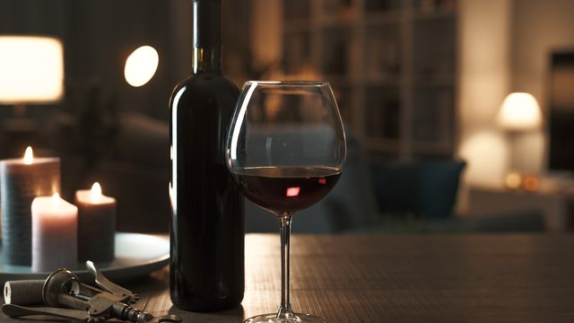

Com uma variedade impressionante de estilos, sabores e aromas, a cerveja oferece algo para todos os gostos. Desde as refrescantes lagers até as robustas stouts, passando pelas complexas ales e pelas refrescantes cervejas de trigo, há uma infinidade de opções para explorar.

Vinho tinto €
Feito a partir de uvas escuras, ele varia muito em sabor, dependendo da uva utilizada, do terroir e do processo de produção.
Vinho verde €
Apesar do nome, não se refere à cor verde do vinho, mas sim à região onde é produzido, no noroeste de Portugal. Os vinhos verdes são conhecidos por sua acidez vibrante, leveza e baixo teor alcoólico, o que os torna perfeitos para serem consumidos frescos, especialmente nos dias quentes de verão.
Vinho branco €
O vinho branco é uma escolha maravilhosa para muitas ocasiões! Assim como o vinho tinto, ele vem em uma ampla variedade de estilos, sabores e aromas, dependendo da uva utilizada e do processo de vinificação. Uma das grandes vantagens do vinho branco é a sua versatilidade: ele pode ser fresco e frutado, seco e mineral, ou encorpado e complexo, adaptando-se a uma variedade de pratos e paladares.